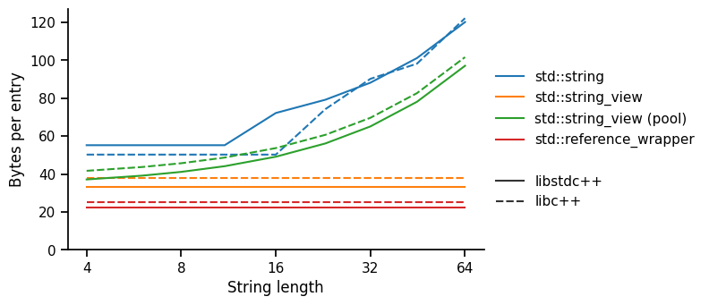
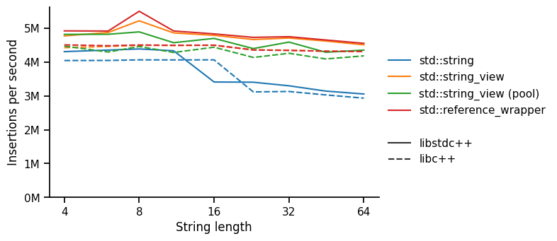
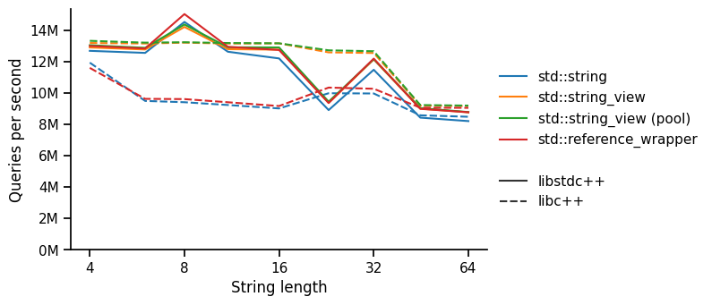

std::{string, string_view, reference_wrapper}A C++ mantra is that you don't pay for what you don't use1. It turns out that std::string has quite a long list of jobs, with which you do pay for what you don't use, both in memory usage and runtime.
But the STL now provides some handy alternatives — std::string_view and std::reference_wrapper<std::string>. Let's explore & benchmark them in this brief post.
std::string — the "do everything" optionA std::string owns a mutable & growable sequence of characters. It owns a char* to a null-terminated C-string, but must also hold the size since the standard requires that .size() takes constant time. It also has a capacity, much like std::vector, since it is often used to build strings iteratively.
struct string {
char* data; // owning, null-terminated
size_t size;
size_t capacity;
};Small string optimisation (SSO). When strings are small, they can be stored inside the std::string object itself, rather than as a separate memory allocation, managed by the std::string. This means that a string of length <= 22 (libc++) or 15 (libstdc++) can have no additional memory usage. Slightly abstracted, they look like this:
struct sso_string_libcxx { // libc++-18
char[23] data; // null-terminated
uint8_t size;
};
struct sso_string_libstdcxx { // libstdc++-14
char* data; // = &_data[0]
size_t size;
char[16] _data; // null-terminated
};std::string_view — a span of charactersTake a std::string, remove its ability to grow (delete capacity), don't require the data to be null-terminated, make it non-owning, and you get a std::string_view. It's pretty straight forward:
struct string_view {
char* data; // non-owning
size_t size;
};std::reference_wrapper<std::string> — the modern pointerIf you've already got std::string objects somewhere, you can also use a std::reference_wrapper, which behaves like a copyable and assignable reference to a std::string and can be used in STL collections. It's worth considering because it's small, just a single pointer:
struct reference_wrapper<std::string> {
std::string* value;
};In our example below, we'll create a std::unordered_map of strings to integers. To do this with std::reference_wrapper requires a few extra explicit template parameters since it doesn't forward the definitions of hash and equal_to by default.
std::unordered_map<std::reference_wrapper<const std::string>, size_t,
std::hash<std::string>, std::equal_to<std::string>> map;
// behaves much like a std::unordered_map<std::string, size_t>First let's check the sizes, which are exactly what we'd expect from the definitions above:
sizeof(std::string): 24 (libc++) 32 (libstdc++)
sizeof(std::string_view): 16
sizeof(std::reference_wrapper<std::string>): 8For our main performance results, we consider the problem of filling and querying a hash map of 1M strings, all of equal length of 4-64 characters, to integers:
// given `std::vector<std::string> values`
std::unordered_map<std::string, size_t> map;
for (auto i = 0u; i < values.size(); ++i) {
map[values[i]] = i; // insertion
}
auto sum = 0u;
for (auto& value : values) {
sum += map.find(value)->second; // query
}We test (1) std::string, (2) std::string_view onto the original string, (3) std::string_view with a separate std::vector<char> buffer to hold the data, and (4) std::reference_wrapper of the original string. We look at memory usage, time per insertion and time per query.
Memory usage

As expected, std::reference_wrapper is the smallest (assuming the strings are already stored elsewhere), followed by std::string_view. Note the difference between libc++ and libstdc++ here is due to a difference in the std::unordered_map implementation — we're counting memory usage due to the load factor in the hash table.
We can clearly see the point where the small string optimisation ends — between 11 and 16 bytes for libstdc++ and between 16 and 23 bytes for libc++. Except for libc++ strings of approximately 14-22 bytes (large SSO strings), we see that a std::string_view with a separate pool is more memory-efficient than std::string. This is due to the std::string's capacity to support efficient growth and null-termination, neither of which are relevant to this benchmark.
Insertion speed

Here, we notice that std::string insertion is generally a little slower, but then steps down to be considerably slower than everything else for large (non-SSO) strings. It is somewhat surprising that this is slower than std::string_view with a std::vector<char> pool, but it may be because the pre-allocated pool is much more efficient than the generic memory allocator.
There is also a small fixed difference between libstc++ (faster) and libc++, which we presume is due to the std::unordered_map implementation.
Query speed

The first notable effect is that the libc++ std::string and std::reference_wrapper are considerably slower than other methods. This seems to be a trade-off that libc++ has made for SSO strings, obtaining a much more memory-efficient structure (24 bytes with max 22-character SSO) than libstdc++ (32 bytes with max 15-character SSO) by maximising reuse. However, this requires extra unpacking when hashing and comparing. In contrast, a libstdc++ SSO string looks exactly the same as a long string (at query time). Note that the std::string_view (no pool) uses the same data in the same layout as std::string, but runs faster.
The second effect is that the libstdc++ test performs poorly for 23-character strings, across all implementations. We suspect this might be due to poor alignment, but it isn't clear why the libc++ std::string_view should be immune from this effect unless it is due to the specific implementation of equality/hash in libstdc++. We were careful to interleave execution of our benchmarks to reduce the likelihood that this is due to "bursting noise".
Interestingly, the additional indirection for std::reference_wrapper seems to have no measurable effect on performance.
Note: We also tested for 64k and 16M entries (in place of 1M) and with GCC (in place of Clang), but the results were similar. Additional benchmarking details are given at the end of this post.
Before diving into this rabbit hole, I hadn't appreciated the trade-offs employed by a std::string in order to do so many jobs, and how easy it is to replace them with STL alternatives. And at this point I should note that I'm by no means the first to explore these topics, for example in this helpful QA.
For what it's worth, my takeaways:
std::string for API convenience.std::reference_wrapper when the std::string is already stored elsewhere, and we want to minimise memory usage.std::string_view to optimize memory with ownership (using a separate pool), especially when there are substrings that could be aliased.If we need to optimize to the maximum, we'll inevitably go full-custom anyway: compressing pointers and sizes, using prefix trees, etc. But the STL gives us a few options in our standard toolkit before we have to go as far as that!
Benchmarking code is here, and full data & analysis are here. System details:
CPU: i7-1165G7, 2.80GHz, 4 cores, 12 MB L3 cache
Memory: 16 GB LPDDR4, 4267 MT/s
Compiler: clang 18.1.3 [flags: -O3 -std=c++20]
OS: Ubuntu 24.04.1 [Linux 6.8.0-45 x86_64]The Zero Overhead Principle, Bjarne Stroustrup, The design and evolution of C++, 1995. ↩